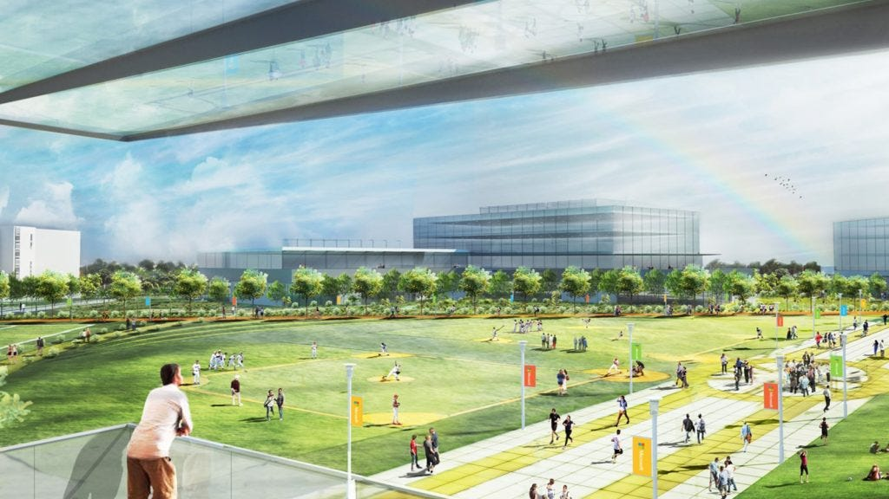
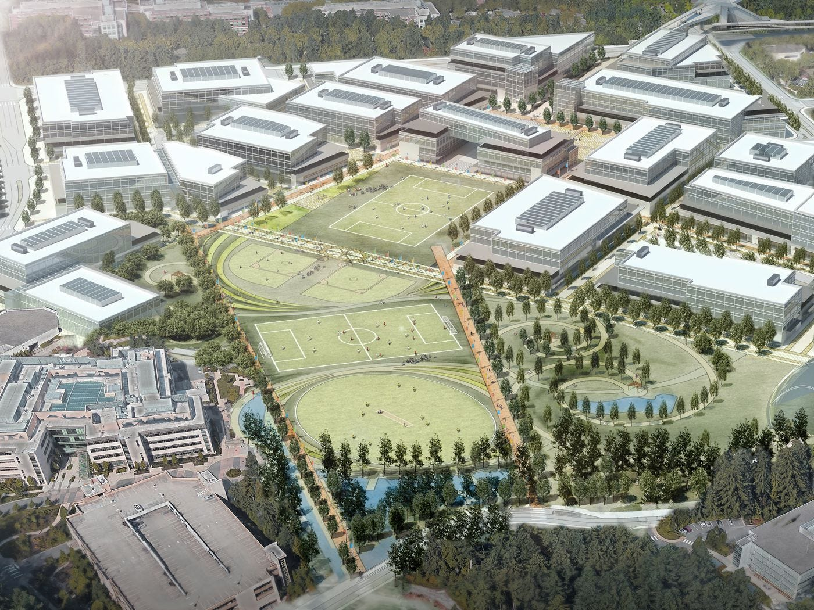

Feb 24
The energy-efficient Tech Campus

Wherever you are, Microsoft will connect with you if your profile is interesting because what this company is building is beyond cultural differences and mainly about using technology for producing meaningful solutions that will make businesses and people’s life simpler while contributing to the stabilization and improvement of our environment. Speaking about the environment, Microsoft has not rebuilt its own headquarter only because it is a Trillion dollar tech company that can but because the energy efficiency of Microsoft buildings and their seamless integration into the environment is for Microsoft a signal that it sends for telling that climate matter and this big tech company that it is cares about the environment and others big and small should.

Of course, all big and small tech companies will follow this example and it will not be about having fancier office space. What some often accuse big tech companies is how fancy their office spaces are but those who think like that aren't taking into consideration the impact of the environment of work on the performance of the employee. Remark that a study has shown the positive impact of the noise of hammers induced by the rooms where three black-smith was working had on their performance and creativity. Maybe Big tech companies are the most successful businesses because of that. But of course, it is not about that only a but also about great people trying to build great technologies what every tech company big and small is and even the alone tech entrepreneur or software engineer that you are.
We all now know the importance of Culture in a company and our environment is directly related to this culture and can mold it. When I was printing the names of these startups on my wall six years ago that was about that. when Seth Godin is surrounded with books, that’s also about that and when you look around you you can see what’s into your cultural signal.
Where we stand has an impact on what we do then if it happens that we gain something from what we were doing it’s reasonable to consolidate where we stand by making it better and more efficient. That’s what leading companies like Microsoft are doing when they are rebuilding and rethinking their working environment both in space and time. This rebuilding initiative started way before the pandemic and the necessity of remote working but this painful event accelerated the attendance toward change because from it we got more signals that show the need for change in how we work and communicate.
Imagining this game experience around big tech companies' headquarters made me think a lot about the importance of office space design and how it could impact productivity and team happiness, Twos that could only lead to more delighted customers. This is a Loop that is the power app of a growing economy that adds not only economic values but social and environmental also. You could glean that I am sending green followers to Microsoft but we, tech women and men and every curious person, are empathic that’s why wherever we listen, see or know something good about others we take it for us also and when it’s bad we hope that it only concerns us and not reaching others and the pandemic taught us that we are right being empathic but how dare many great people left us during this difficult moment. My memories go to them and I hope they all will have a place on these great energy-efficient tech headquarters that we are building. They already are because in our memories they will stay.
Rest all in peace into a paradisiac tech headquarter.